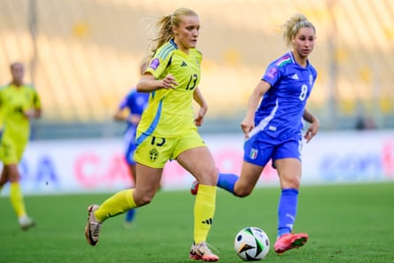
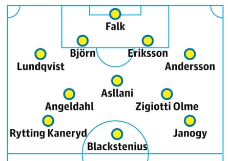

This article is part of the Guardian’s Euro 2025 Experts’ Network , a cooperation between some of the best media organisations from the 16 countries who qualified. theguardian.com is running previews from two teams each day in the run-up to the tournament kicking off on 2 July.
Overview
Sweden’s journey to the Euros was both complicated and straightforward. The complicated bit came first and involved being drawn in the same group as England and France: Sweden ultimately finished third despite drawing twice with the European champions. That led to the simple bit: a playoff where Serbia were taken apart 8-0 on aggregate.
After that came a mixed Nations League campaign. Denmark were beaten home and away, Sweden scoring eight goals over two matches. Wales proved a harder nut to crack, with Rhian Wilkinson’s team coming away with two 1-1 draws.
Given that every match was competitive the head coach, Peter Gerhardsson, could not afford to rotate his squad much. For example, going into the game against Norway on 26 June, there was only one goalkeeper available with international experience: Jennifer Falk. The two back-ups, Tove Enblom and Emma Holmgren, are yet to play at senior level.
Gerhardsson, however, was unconcerned. “I don’t know if it really matters,” he said. “If one of them had played and conceded a lot of goals, that selection might have backfired – and then you’d have to take that result with you into the Euros.”
In general Sweden have been fortunate with injuries but during the final camp Arsenal’s Rosa Kafaji withdrew with a foot injury and in the big win against Denmark in early June, the Barcelona star Fridolina Rolfö also suffered a foot injury. On 9 June Barça said the player had suffered ligament damage but Sweden’s medical team are confident she will be fit for the opening fixture against Denmark on 4 July.
The key midfielder is Real Madrid’s Filippa Angeldahl, Gerhardsson’s trusted general on the pitch, and she contributes with her fair share of goals. Nathalie Björn and Magdalena Eriksson are reliable choices at centre-back, while on the right, Hanna Lundkvist has become first-choice but she is now facing competition from the youngster Smilla Holmberg.
Up front, the attacking trio of Rolfö, Stina Blackstenius and Johanna Rytting Kaneryd will once again lead the line, having proved their consistency for some time now.
The coach
This is a special tournament for the head coach, Peter Gerhardsson , his last in charge. He will be replaced by the former Australia head coach, Tony Gustavsson, after Euro 2025.Originally from Uppsala and a former top-flight player for Hammarby, Gerhardsson has been in charge since 2017. In nearly eight years he has led Sweden to two World Cup bronze medals, an Olympic silver and a European Championship semi-final. He also walked into a broom cupboard after a press conference at the 2023 World Cup, to everyone’s amusement, a moment immortalised by the Guardian cartoonist David Squires . Gerhardsson was delighted: “For me, who liked cartoons when I grew up, that was big. It can’t be easy to feature in a Guardian cartoon. I managed that without even trying! I felt: ‘Damn, that’s fun.’ The fact that they were poking fun at me I don’t care about. I am who I am. I try to be honest to myself so here I am, that has pros and cons. You have to take that.”
Star player
Johanna Rytting Kaneryd . Sweden have several high-profile players, such as Stina Blackstenius and Fridolina Rolfö, but Chelsea’s Rytting Kaneryd was trusted by her club coach Sonia Bompastor during the 2024-25 season and was named Sweden’s footballer of the year for 2024-25. She played a key role in Chelsea’s domestic treble and was one of Sweden’s most important players in both the Euro qualifiers and the Nations League. She is best known for her speed and fearless one-on-one play down the flank. As Magdalena Eriksson said: “As a former left-back I can just say that she’s a full-back’s worst nightmare.”
One to watch
The 18-year-old full-back Smilla Holmberg is one of the most exciting and intriguing players in the squad. Holmberg and another youngster, her Hammarby teammate Ellen Wangerheim, both have huge potential. But while Wangerheim has been linked with several big clubs abroad it has been relatively quiet for Holmberg. That might be about to change. She made an impressive debut against Italy in the Nations League and if she continues on the same path most clubs will want her. A fearless full-back who is not afraid to attack, she is also remarkably composed in defence.
Smilla Holmberg in action against Italy in the Nations League fixture in May.Photograph: Sipa US/Alamy
Probable lineup
Status of domestic top flight
Damallsvenskan has historically had a high status. It produces talented players who frequently move on to top international leagues. However in recent years the Swedish league has lost some status globally – a challenge currently being addressed in Sweden to keep pace with the rapidly growing major leagues. The league is officially classed as professional but some aspects are more semi-professional. Many players have other jobs alongside their playing careers. There is a lot of talent coming through, including Häcken’s Felicia Schröder, as well as the Hammarby duo Wangerheim and Holmberg.
Realistic aim in Switzerland
Sweden are traditionally a strong tournament team. They should advance from the group, though Germany will be a tough opponent. A potential quarter-final against England or France would be a major obstacle and it’s reasonable to think that the journey will end there.
The Sweden team guide was written by Ella Lindvall for Fotbollskanalen .